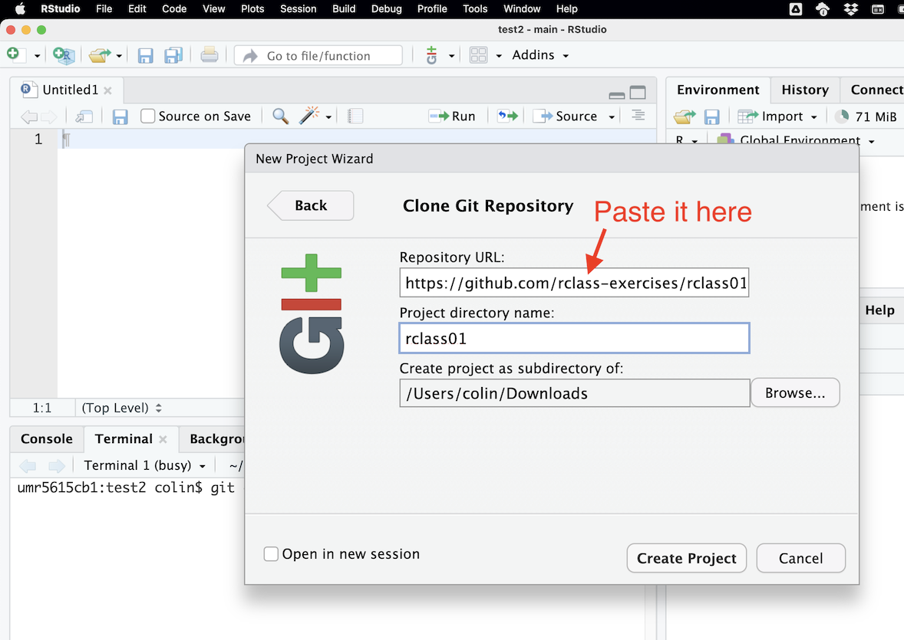
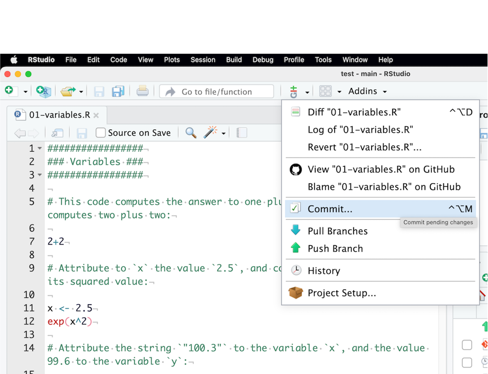

3 Getting ready
3.1 The easy way
3.2 The more advanced way
If you don’t want to use Rstudio but rather want to keep with your favorite text editor, like I do:
- I still recommend downloading and installing R via CRAN (I had some packages problems due to a
homebrewinstallation on Mac). - To be fully operational with Rmarkdown files without using Rstudio, you need to install
pandoc.
Then you can use Visual Studio Code or Sublime Text – see the configuration below. There is also a new fork of VSCode by the Rstudio team: Positron, a very promissing project.
Configuring VS Code
I personally use VS Code.
- First, install the radian console.
- Install the language server protocol package in R with:
install.packages("languageserver") - In VS Code, install the following extensions:
- Enable
r.bracketedPastefor using Radian - Set up
r.rterm.windows,r.rterm.macorr.rterm.linux: Path to Radian (where you installed radian) - You should be good to go: ⌘+⏎ will send the current line/selection to the radian console and ⌘+Shift+K will render the current Rmd file.
Here is the relevant part of my settings.json file:
{
"r.rterm.mac": "/usr/local/bin/radian",
"r.rpath.mac": "/usr/local/bin/R",
"r.bracketedPaste": true,
"r.lsp.diagnostics": false,
"r.sessionWatcher": true,
"r.rmarkdown.knit.useBackgroundProcess": false,
"editor.guides.bracketPairs": true
}Also, I recommend turning on the session watcher ("r.sessionWatcher": true), and then adding the following code to your .Rprofile. This way, the help, tables and figures can be viewed in the VS Code browser panel.
options(vsc.browser = "Beside")
options(vsc.viewer = "Beside")
options(vsc.page_viewer = "Beside")
options(vsc.view = "Beside")
options(vsc.helpPanel = "Beside")
if (interactive() && Sys.getenv("TERM_PROGRAM") == "vscode") {
if ("httpgd" %in% .packages(all.available = TRUE)) {
options(vsc.plot = FALSE)
options(device = function(...) {
httpgd::hgd(silent = TRUE)
.vsc.browser(httpgd::hgd_url(), viewer = "Beside")
})
}
}Here are also a few keybindings that I use (keybindings.json):
[
{
"description": "Create R terminal",
"key": "alt+cmd+r",
"command": "r.createRTerm"
},
{
"description": "Insert code block",
"key": "cmd+shift+i",
"command": "editor.action.insertSnippet",
"when": "editorTextFocus && editorLangId == 'rmd'",
"args": {
"snippet": "``` {r}\n$0\n```"
}
},
{
"description": "Setwd to current file path",
"key": "cmd+\\",
"command": "r.runCommandWithEditorPath",
"when": "editorTextFocus && editorLangId =~ /r|rmd/",
"args": "setwd(dirname(\"$$\"))"
},
{
"description": "Insert R arrow",
"key": "ctrl+,",
"command": "editor.action.insertSnippet",
"when": "editorTextFocus && editorLangId =~ /r|rmd/",
"args": {
"snippet": " <- "
}
},
{
"description": "Insert pipe",
"key": "ctrl+.",
"command": "editor.action.insertSnippet",
"when": "editorTextFocus && editorLangId =~ /r|rmd/",
"args": {
"snippet": " %>% "
}
},
{
"description": "help document",
"key": "ctrl+h",
"command": "r.runCommandWithSelectionOrWord",
"when": "editorTextFocus && editorLangId =~ /r|rmd/",
"args": "help($$)"
},
{
"description": "view table",
"key": "cmd+shift+u",
"command": "r.runCommandWithSelectionOrWord",
"when": "editorTextFocus && editorLangId =~ /r|rmd/",
"args": "DT::datatable($$)"
},
{
"description": "reopen figure panel if closed",
"key": "ctrl+alt+p",
"command": "r.runCommand",
"when": "editorTextFocus && editorLangId =~ /r|rmd/",
"args": ".vsc.browser(httpgd::hgd_url(), viewer = \"Beside\")"
},
{
"description": "view object",
"key": "cmd+u",
"command": "r.runCommandWithSelectionOrWord",
"when": "editorTextFocus && editorLangId =~ /r|rmd/",
"args": "View($$)"
}
]
Configuring Sublime Text
I have personally used Sublime Text 3 for a long time, but switched to VS Code recently. Here is what I used to do:
- First, install Package control.
- To set up command line launch:
ln -s "/Applications/Sublime Text.app/Contents/SharedSupport/bin/subl" /usr/local/bin/sublime. - Install a minima the packages
LSP,R-IDE,Terminus, andSendCode, and also the radian console. - You can also add the useful packages
LatexTools,BracketHighlighter,RainbowBrackets,Citer,Path Tools,SidebarEnhancements,SidebarTools, git,GitGutter,Alignment,AutoFileName. - Install the language server protocol package in R with:
install.packages("languageserver") - To create a keyboard shortcut to open a terminal with the radian console as the R interpreter, add this to your keybinding file:
{ "keys": ["super+option+r"], # put whatever you want here
"command": "terminus_open",
"args": {
"post_window_hooks": [
["carry_file_to_pane", {"direction": "right"}]
],
"cmd" : "radian"
}
}- Select
Terminusas the destination of SendCode - You should be good to go: ⌘+⏎ will send the current line/selection to the radian console, ⌘+B will render the current Rmd file, ⌘+\ will set the working directory to the current file’s folder.
3.3 Install and configure git
3.3.1 Setting up git and Rstudio
R combined with the git version control system provides a convenient setup for making your research project reproducible, since git allows you to track and share your code and analysis:
- It makes it easy to share your projects
- It facilitates collaboration, since people can contribute to your project and vice versa. They can also report errors (bugs) or suggest new additions (features) to projects
- You can revert to a previous version if you find bugs or accidentally delete something
- You can see what changes between different versions of your code
- Also, R makes it easy to share packages: you can install other people’s development packages with a single line of code, i.e.
devtools::install_github("username/packagename") - And finally and for the most important part of this class: we will use GitHub Classroom to do and submit homework.
RStudio has built-in support for git, so we will use the common combination of R + git + RStudio.
- First, if you haven’t done this already, download and install git
- Create a free GitHub account
- Setup git in RStudio:
- Open RStudio and go to
Tools > Global Options…click on git/SVN - Check Enable version control interface for RStudio projects
- Set the path to the git executable that you just installed.
- Open a shell, if you don’t know where git is installed:
Tools > Terminal > New Terminal - Windows: type
where gitand hit enter. The path should be something like: C:/Program Files (x86)/git/bin/git.exe - Linux/OS X: type
which gitand hit enter. The path should be something like: /usr/bin/git
- Open a shell, if you don’t know where git is installed:
- Restart RStudio, if it worked out you will find the git icon on the top toolbar, as shown below.
- Open RStudio and go to
- Set up your user name and email address (the one you used to register on GitHub) in the terminal (
Tools > Terminal > New Terminal, see Figure 3.1):
# You only need to do this once
git config --global user.name 'yourGitHubUsername'
git config --global user.email 'your@email.com'3.3.2 Working with git and RStudio
When creating a new project from scratch or from an existing folder, you can check Create a git repository to activate git for this project. You can also do this later by clicking on Tools > Version Control > Project Setup.
What we will use for the exercises here, is the possibility of creation of new project from a GitHub repository, as shown in Figure 3.2.
- First, copy the repository HTTPS url: you’ll find the repository url when pressing the green button
Code. The link will be something likehttps://github.com/username/the-git-repo.git. - Then create a new RStudio project with git version control. Select
File > New Project.., thenVersion Control > Git, then provide the repository HTTPS link, select where you want to place the R workspace folder, and create the project. RStudio will then download all the repository files in this new folder (or “clone”, in git terms). - Alternatively, you can also download the zipped repo, unzip the files, and create a new project from this folder.
Version Control.
Git.
Code button.

- Then, you’ll do your coding in the various files of the project, and save the changes.
- And finally, you’ll need to “Commit” the changes, and then “Push” them on the GitHub repository, as described on Figure 3.3.

Git > Commit
Commit then Push.
3.4 In any case: install LaTeX
A full \(\LaTeX\) distribution (emphasis on full) will be needed to knit markdown files to PDFs (you don’t need it to output html files though):
- Windows: go here and download the Net Installer to install the complete distribution
-
Mac: go here or type
brew cask install mactexin the terminal if you have Homebrew installed - Linux: here fore example
Alternatively, you can also work with TinyTeX that will install the needed packages on the fly. It is recommended on the knitr package help, but I only had problems with this, so I recommend the full \(\LaTeX\) distribution option if you don’t mind taking up a few gigabytes of your disk. If you do, just run this in the R console:
install.packages("tinytex")
tinytex::install_tinytex()To uninstall TinyTeX, run:
tinytex::uninstall_tinytex()3.5 Working in Rstudio
Remember
Always Work with Projects!!
Launch Rstudio, click File > New Project, and follow the dialog box (existing directory or not, etc.). When you have several ongoing projects, you can switch between them using the Project navigator (see Figure 3.4).

The great interest of working with Projects is that the default working directory will be relative to the root directory of the Project. In other words, if you store your data in a Data folder, you can read it by running read_function("Data/your_file.txt"). This is one of the fundamentals of reproducible data treatment as:
- You won’t have to write the absolute path towards your file, like
read_function("C://path/to/your_file.txt"), path that is unlikely to be the same depending on the computer it is located on. This helps you share your whole project folder with others, or just move it around on your computer and still have a working code. - You won’t have to start your script by a
setwd("/path/to/your/data")command (for set working directory), which is much better for the same reasons as above.
Write whatever you want in the “Source code” panel and save it in a .R (or .Rmd) file, and run it by selecting it and hitting ⌘+⏎ (Ctrl+⏎ on Windows, Linux). If no text is selected, hitting ⌘+⏎ will launch the current line. You can see the file contents of your project in the project’s file explorer (see bottom right corner of Figure 3.4).
The code output will be seen in the “R Console” panel if it’s a text, or in the “Graph” panel if it’s a graph. A list of all defined variables and functions is available in the “Environment” panel. You can also directly write and run code in the “R Console” panel, if it’s code you don’t care to save in a script (like installing a package or whatever).
You can install packages by running the install.packages("package_name") command in the R console or R script, or you can also click on the “Packages” tab in the bottom right corner, and then “Install” or “Update” in case you want to install or update your packages. “Update” will show you a list of installed packages that have a new published version. All verified packages are located on the CRAN (Comprehensive R Archive Network). It is thus really easy to install packages and maintain (update) your packages in R. There is also the possibility to install packages from source if you want to install custom packages – “homemade” packages that didn’t go through the CRAN verification process: do so at your own risks.
More on the Rstudio cheatsheet.
3.6 Setting up the environment
Make sure you have the following packages installed by launching the following commands: copy-paste them in the “Source code” panel (upper left after having created a new R script), select all the lines and hit Ctrl+⏎ (Windows, Linux) or ⌘+⏎ (Mac). These are the main packages that we will use in this class:
# Necessary for the exercises
install.packages("tidyverse")
install.packages("patchwork")
install.packages("broom")
# Recommended for smooth working and some exercises
install.packages("devtools")
install.packages("rmarkdown")
install.packages("knitr")
install.packages("shiny")
install.packages("plotly")
install.packages("tikzDevice")
install.packages("quantities")
install.packages("ggforce")Later on, a package can be loaded by calling:
library(package_name)or by checking it in the “Graphs” panel under the “Packages” tab. If you want to access a function from a given package without loading it (or because several packages define the same function and you want to specify which one to use), type:
package_name::function_name(parameters)If you want to access the documentation on a given package, click the link on this package in the “Packages” tab. In a more general way, help on a function is accessed by typing in ?function_name, the help appearing in the “Graph” panel.
3.7 The exercises
I made a series of exercises with their solutions. You can download the exercises and solutions from the following repositories, then create a Rstudio project from the unzipped folder:
- Beginner exercises
- Advanced exercises
- GGplot2 exercises
- Quarto exercises
- More “advanced” exercises can be found in chapter 17, List of exercises